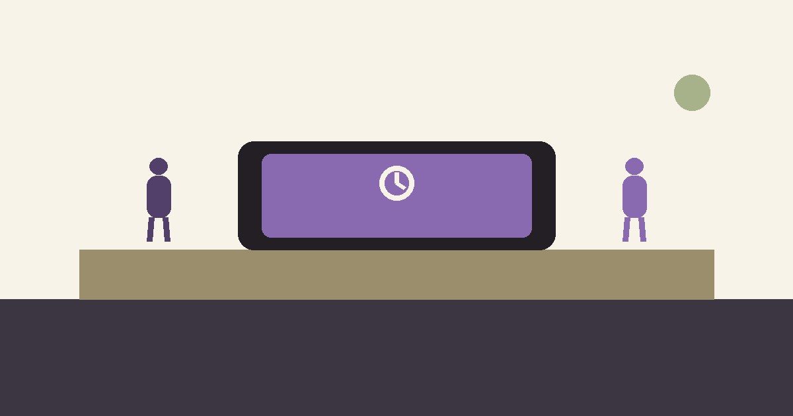

Pantallas sin guerra: reglas que sí se sostienen
*Guía para padres · Pantallas, redes y acuerdos en casa*

La hora del apagón. Tu hijo dice "cinco minutos más" por séptima vez, tú dices que no, y ahí empieza la batalla: gritos, portazos, horas de tableta confiscada que mañana vuelve a empezar.
Déjame darte un dato que quizá te quite un poco de vergüenza: el 82% de las familias dice que las pantallas y las redes son una fuente de conflicto frecuente en casa. Y según una encuesta de Pew Research, solo 1 de cada 5 padres logra sostener las reglas que pone sobre pantallas. Solo 19%. No es que seas incapaz: es que casi nadie puede, porque las reglas se ponen en caliente y se rompen en caliente.
El problema no es la pantalla. El problema es que la pantalla es el único lugar donde tu hijo siente que tiene control, placer inmediato y conexión con sus amigos — y quitarlo sin más, de golpe, se siente como quitarle el mundo.
Desde la Gestalt, te propongo cambiar la guerra por un acuerdo. Tres movimientos:
- Acuerda en calma, no en batalla. La próxima regla no se decide a las 9 pm con la tablet en la mano de tu hijo. Se conversa a media tarde, con él sentado contigo: "¿cuánto tiempo crees justo? ¿qué pasa cuando se acaba?" Un acuerdo hecho en calma se sostiene tres veces más que una orden gritada.
- Sustituye, no solo quites. "Se acabó el tiempo" deja un vacío que el niño llena con protesta. "Se acabó el tiempo, y ahora toca esto que a ti te gusta" llena el vacío con otra cosa. El aburrimiento es el combustible de la pantalla; sin alternativa, la regla es solo un muro.
- Cumple lo que acuerdas — también para ti. Si la regla es "nada de pantallas en la mesa", ¿tú dejas el celular? Los hijos no aprenden las reglas que dices; aprenden las que ven. Y esto, curiosamente, también nos regula a nosotros: muchos papás descubren que el acuerdo con su hijo les ordena a ellos también.
Un aviso honesto: si el uso de pantallas de tu hijo ya está costándole en el sueño, la escuela o el ánimo de forma sostenida, puede estar habiendo un problema de ansiedad o de regulación detrás — la pantalla a veces es el síntoma, no la causa. En esos casos, el trabajo es con la emoción, no con el control remoto.
Soy Oscar Robledo, psicólogo de orientación Gestalt. Atiendo en línea a niños, adolescentes y familias.
→ oscarrobledo.qtzl.cloud — agenda tu llamada de 15 minutos sin costo.
*Fuentes (resumen): Pew Research Center, 2025 (42% de padres cree que podría manejar mejor las pantallas; 19% sostiene sus reglas); National Parenting Pulse Survey (82% de conflicto por pantallas/redes; 86% de preocupación por peligros en línea); Stripling, 2021 (Gestalt en niños/adolescentes: autorregulación y expresión emocional).*